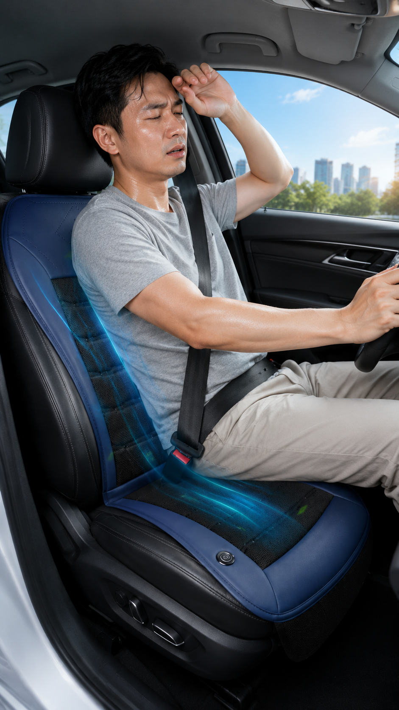
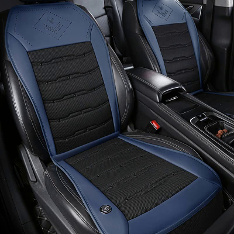
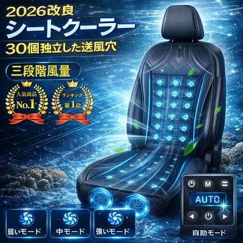
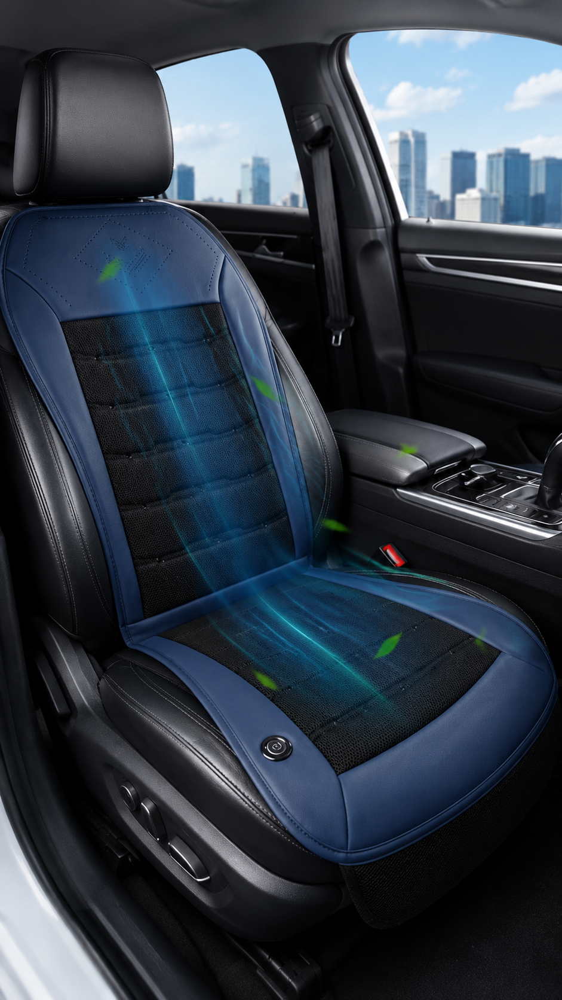
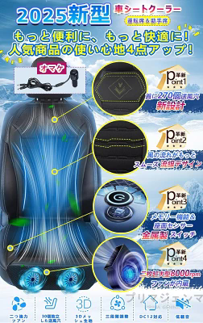
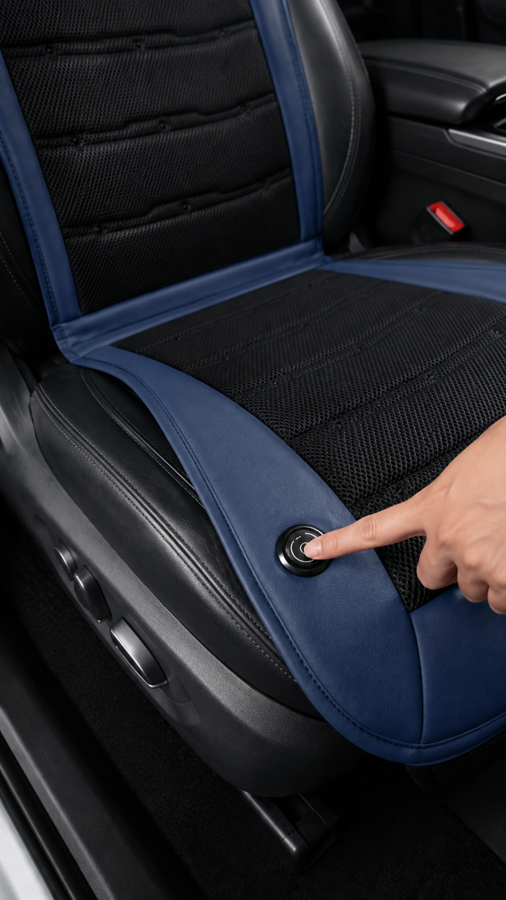

本ページには広告・アフィリエイトリンクが含まれます。紹介内容は、読者が比較しやすいように整理しています。
公式情報・販売ページ・提供画像をもとに、仕様と購入前の確認点を整理しています。実際に購入・使用したレビューではありません。
夏の運転中、エアコンをつけていても、背中やお尻などシートに触れている部分が蒸れて不快になることはないでしょうか。エアコンの風は空間全体には届きやすい一方で、体とシートが密着している部分には届きにくいことがあります。
そこで気になるのが、車のシートに後付けできるシートクーラーです。この記事では、商品ページと提供画像で確認できた範囲の特徴を整理しています。冷房機器ではなく送風タイプであること、体感には個人差があることを前提に、購入前の確認点もあわせてまとめます。

車用シートクーラーとは
商品ページでは、シート内部のファンで空気を取り込み、座面や背面へ風を送るタイプとして案内されています。エアコンそのものではなく、シートに触れている部分へ空気を通す送風シートと考えると分かりやすいです。
タイトルでは「シートクーラー」「クールシート」とも呼ばれており、運転席向けの後付けカー用品として紹介されています。

この商品の主な特徴
商品ページと提供画像では、次のような特徴が案内されています。
- シート内部のファンによる送風構造
- 三段階の風量調整
- 自動モード（自動機能）
- メモリー機能
- アイスシルク素材・ハニカム構造／3Dメッシュ生地の案内
- 座面から背面・首元方向への通気を意識した設計案内
商品画像には「2026改良」「2025新型」といった年式表記の混在もあります。本文では年式より、確認できた仕様の整理を優先しています。

送風の仕組み
商品ページでは、超大型ファンを2基内蔵し、回転数の目安として8000rpmが案内されています。表面側には通気穴があり、「30個の通気穴」に加えて「首元に約270個の通気穴」といった案内も見られます。数字の数え方や範囲が分かれる可能性があるため、詳細は商品ページで確認してください。
導風板やエアフローチャネルにより、内部の空気を座面・背面へ送りやすい構造として説明されています。冷たい空気を作る冷房ではなく、空気を循環・送風するタイプです。


操作方法と機能
商品ページでは、次のような操作・機能が案内されています。
- 三段階の風量調整
- 自動モード（自動起動・センサー連携などの案内）
- メモリー機能
- 金属製スイッチ／ボタン操作
- 長押しで手動モード切替、短押しで風量切替などの案内
実際のボタン配置や表示内容は仕様差がある可能性があるため、購入前に商品ページと取扱説明の案内をご確認ください。

使いやすそうな場面
商品の位置づけから見ると、次のような場面で候補になりやすいです。
- 夏の通勤・通学の運転
- 長距離ドライブ
- 営業車など長時間の車移動
- 夏のレジャー・ドライブ
- 車中泊やキャンプ時の車内（ただし給電方法の確認が必要）
エアコンの代わりになる商品ではなく、シート接触面の蒸れ対策として検討する位置づけです。
購入前に確認したいポイント
未購入のため、次の点はリンク先の商品ページで確認しておくと安心です。
- 対応電圧（12V／24Vなど）
- 給電方法（シガーソケット、USBなど）
- シートサイズと車種との相性
- 固定方法とヘッドレスト周りの収まり
- ケーブル長と配線の取り回し
- 動作音の大きさ（「静音」「低騒音」は商品案内表記）
- 素材（メッシュ／アイスシルクなどの案内）
- セット内容（本体・ケーブル・説明書など）
- 注意事項・取扱上の制限
商品ページでは「USB給電」「DC12V対応」「24V」などの表記が併記されています。購入する仕様によって給電方法や対応電圧が異なる可能性があるため、商品ページで確認してください。
向いていそうな人
- 夏の運転で背中や座面の蒸れが気になる人
- 車移動が多い人
- 後付けできる送風シートを探している人
- 通勤や長距離運転の暑さ対策を検討している人
注意点
- エアコンそのものではなく、送風タイプです
- 風の感じ方や涼しさには個人差があります
- 車種やシート形状によって装着感が異なります
- 正しく固定し、運転操作やペダル操作を妨げない位置に設置してください
- 配線が足回りやシフト周りに干渉しないよう処理してください
- 対応電圧・給電方法を間違えないよう、仕様を確認してください
- 必ず涼しくなる・熱中症を防げるといった効果を保証するものではありません
まとめ
今回の車用シートクーラーは、シート内部のファンで空気を取り込み、座面や背面へ風を送る後付けタイプとして案内されています。三段階の風量調整、自動モード、メモリー機能などの案内もあり、夏の通勤や長距離運転で気になるカー用品です。
この記事は未購入商品を、商品ページと提供画像から整理したものです。対応電圧・給電方法・サイズ・固定方法をリンク先で確認してから判断してください。
関連： 車用傘型サンシェード ／ 電動空気入れ ／ 動画で紹介したおすすめ商品一覧